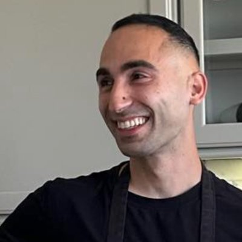

✉
kadair@demi.so ⧉
Kadair Eskandar
Currently
At noosphere, predicting how AI systems will interact in the real world at scale
In the past
- Built an incubator for academic ML researchers to test their ideas, apply their research, and start frontier research companies
- Founding member and head of operations at DEMi
- Joined the first EF cohort in SF to build a personal AI wearable
- Co-started and ran AGI House SF as head of operations
- Built a robot that biopsies lung tumors through FDA clearance and first-in-human trial. Since, the robot has operated on over 10,000 patients.
- Studied biomedical engineering and biodesign at Washington University in Saint Louis